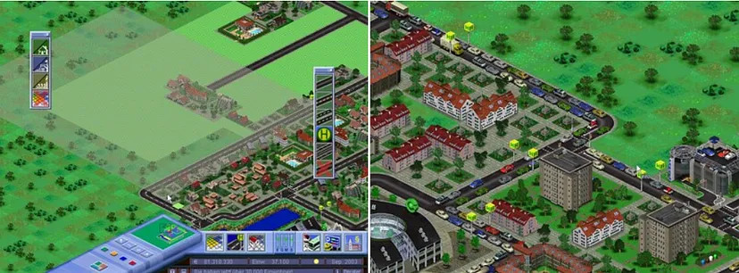
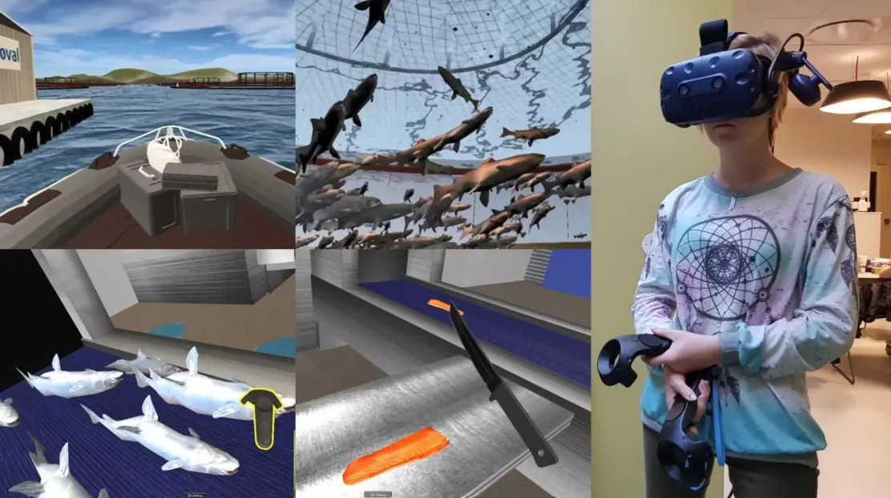
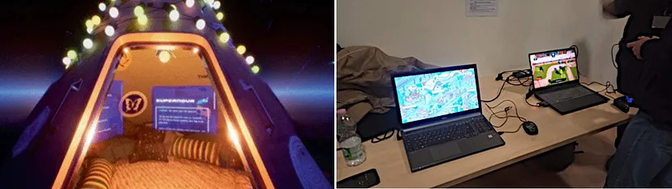

From Bologna, Italy: reporting from IFIP-ICEC 2023
Published on 2023-12-01 by Gabriel C. Ullmann
Complesso di San Giovanni in Monte, where the IFIP-ICEC paper sessions took place in Bologna, Italy. 16 Nov 2023. Personal archive.
This November I have been to Bologna, Italy, for the IFIP International Conference on Entertainment Computing (IFIP-ICEC). Just like last year, I had the opportunity to listen and talk to researchers from around the world on topics such as extended reality (XR), serious games, and accessibility. In this post, I summarize the papers presented and discussions held during the three-day conference and explain why research in computing for entertainment is so important.
* Following a tradition I started last year, I put musical references in the section titles of this post. Can you guess which band I'm referencing? Hint: they have just released a new song.
Live and Let Die: How to Create Durable Serious Games?
Screenshots from the game Mobility. Source: official game website.
Serious games are games created with purposes other than pure entertainment. For example, the game Mobility was created to teach planning and construction of public transport systems. Although used to teach or raise awareness about a topic, serious games can (and should) be fun too. The problem is that many of these games end up being abandoned by their creators and falling into obsolescence, a phenomenon known as "software aging."
We opened the first workshop of the conference, entitled Towards Sustainable Serious Games, debating the reasons for serious game aging in academia. Many of them are developed by master's and doctoral students, who end up leaving their projects behind after finishing their studies. Even when other researchers try to continue these projects, the lack of software documentation and flexibility make the process very time-consuming and error-prone. After the discussions, we proposed several ways to mitigate these issues:
Although we can apply these and other strategies to increase the durability of serious games, the fact is that no piece of software lasts forever. As Ioana Stefan (ATS, Romania) mentioned in her presentation during the workshop: "games age, and so do us". There is no magic formula to determine if a serious game is too obsolete or if it is still worth investing in. In any case, the study and application of disciplines such as Software Architecture and UI/UX can help game developers both in academia and in industry.
We Can Work It Out: Virtual Reality in the Job Market
Training for fishmongers in virtual reality. Adapted from Dr. Ekaternia Prasolova-Førland's slides for IEEE VR 2019.
Extended reality (XR) is an umbrella term that encompasses virtual, augmented, and mixed reality technologies. These terms have become more well-known in recent years, thanks to games like Pokémon Go and Beat Saber. However, as I mentioned last year, XR has not yet "taken off" in the video game world, both because of the high cost of virtual reality headsets and "cybersickness", the nausea and dizziness many people feel when wearing this kind of equipment.
In contrast, XR seems to be finding more and more space in the context of job training. In her keynote entitled Immersive Technologies for learning: adopting a cross-disciplinary approach, Dr. Ekaterina Prasolova-Førland (NTNU, Norway) presented virtual reality projects that introduce young people to professional activities that they might be afraid to try in real life, such as changing a light bulb at the top of a wind turbine, operating a forklift or working on the production line of a fishery.
Also with professional training in mind, Dr. Thiago Porcino (PUC-Rio, Brazil) presented some examples during his XR experiences workshop related to the naval industry. For example, virtual reality experiences are already being used to train people to perform maintenance in vessels offshore, or to visualize the movement of vessels.
I found incredible the high level of immersion, engagement, and fun that these experiences provide. Whether the goal is to train people to perform complex tasks or to help young people who are entering the job market, extended reality has strong educational potential and I believe it will become popular in the near future.
Come Together: Joining Efforts for Accessibility in Games
Image of the game Death of the Internet (left) and other games presented
during the Student Game Competition (right).
Sources: article (left) and personal archive
(right).
This year, the topic of accessibility was on the spotlight both in IFIP-ICEC's paper sessions and in its Student Game Competition. For example, in the article Accessibility Issues Within Serious Games in Engineering Education for Visual Impairment, Sundus Fatima and Dr. Jannicke Hauge (Univ. of Bremen, Germany) show that serious games created for teaching engineering contain few accessibility options and often use color schemes that make them difficult for colorblind people to use.
At the Student Game Competition, María Eugenia Larreina-Morales (Univ. Autónoma de Barcelona, Spain) and her colleagues presented the game "Death of the Internet", which includes audio descriptions of the scenarios and texts in the game, as well as a semi-automatic navigation mechanism between points of interest in the scenario that facilitates the interaction for visually impaired people. The game was voted the best of the competition by the organizers.
Contrary to what many people think, implementing accessibility mechanisms in games does not only mean helping people with disabilities, but also adapting to everyone's needs. In the article Dynamic Difficulty Adjustment by Performance and Player Profile in Platform Game, Marcos Rosa (UnB, Brazil) and his colleagues describe an automatic difficulty adjustment system for platform games, which main objective is to keep players in a state of "flow", that is, offering gameplay that is neither too easy nor too difficult for the player. The paper was voted the best of the conference by the organizers.
Also with the aim of improving player well-being, in the article Exploring the Influence of Collision Anxiety on Player Experience in XR Games, Patrizia Ring and Maic Masuch (Univ. of Duisburg-Essen, Germany) study a phenomenon called "collision anxiety", the fear that players have of colliding with furniture or other obstacles while wearing a virtual reality headset. The researchers conducted an experiment to determine whether this fear is greater in virtual reality or augmented reality games, and concluded that the type of technology has no influence in this aspect. However, more immersive games tend to cause greater collision anxiety.
Final Thoughts
Bologna is a beautiful city, full of history and, in my humble opinion, the perfect place for a conference like IFIP-ICEC. It was amazing to have once again had the opportunity to exchange experiences with people from all over the world who, like me, love games and interactive experiences. In each researcher's work, I see games consolidating themselves not only as forms of entertainment but also as tools that help humanity to teach, learn, work, create and have fun. This inspires me to continue my academic journey.
I would also like to make an honorable mention to the strength of the Brazilian community at IFIP-ICEC. There were dozens of Brazilian researchers presenting articles and games this year, which shows that, contrary to what many argue, Brazilian researchers are capable of producing science at a very high level, as well as being recognized worldwide. And not by coincidence, in 2024 IFIP-ICEC will be in Manaus, Brazil! Unfortunately I still don't know what my schedule will be like next year, but it would be an honor to be able to participate once again. Arrivederci!